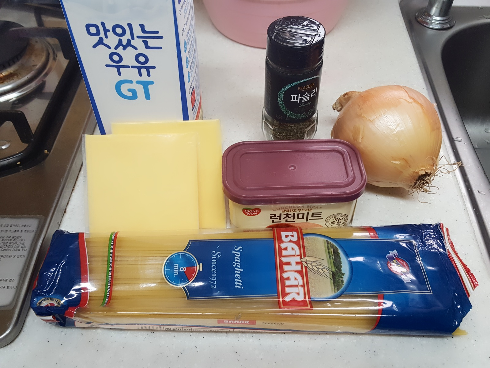
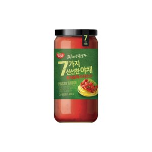
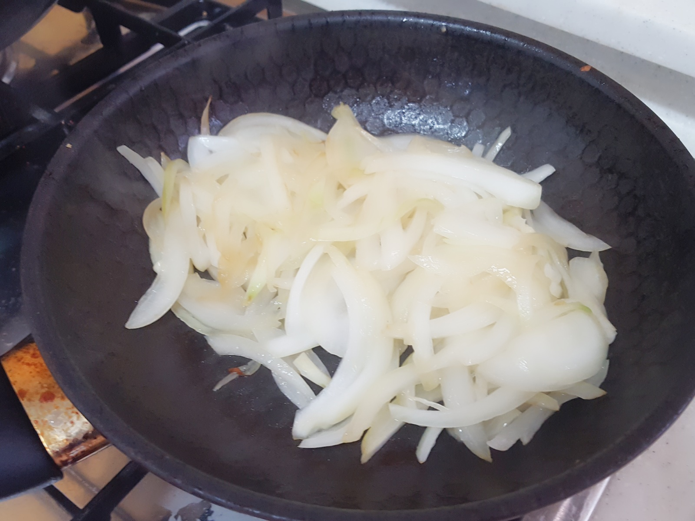
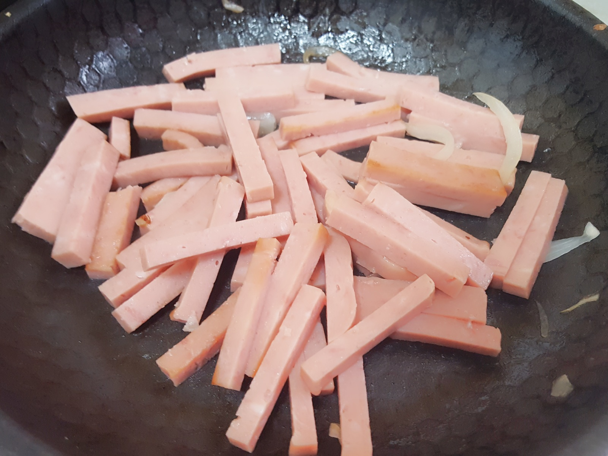
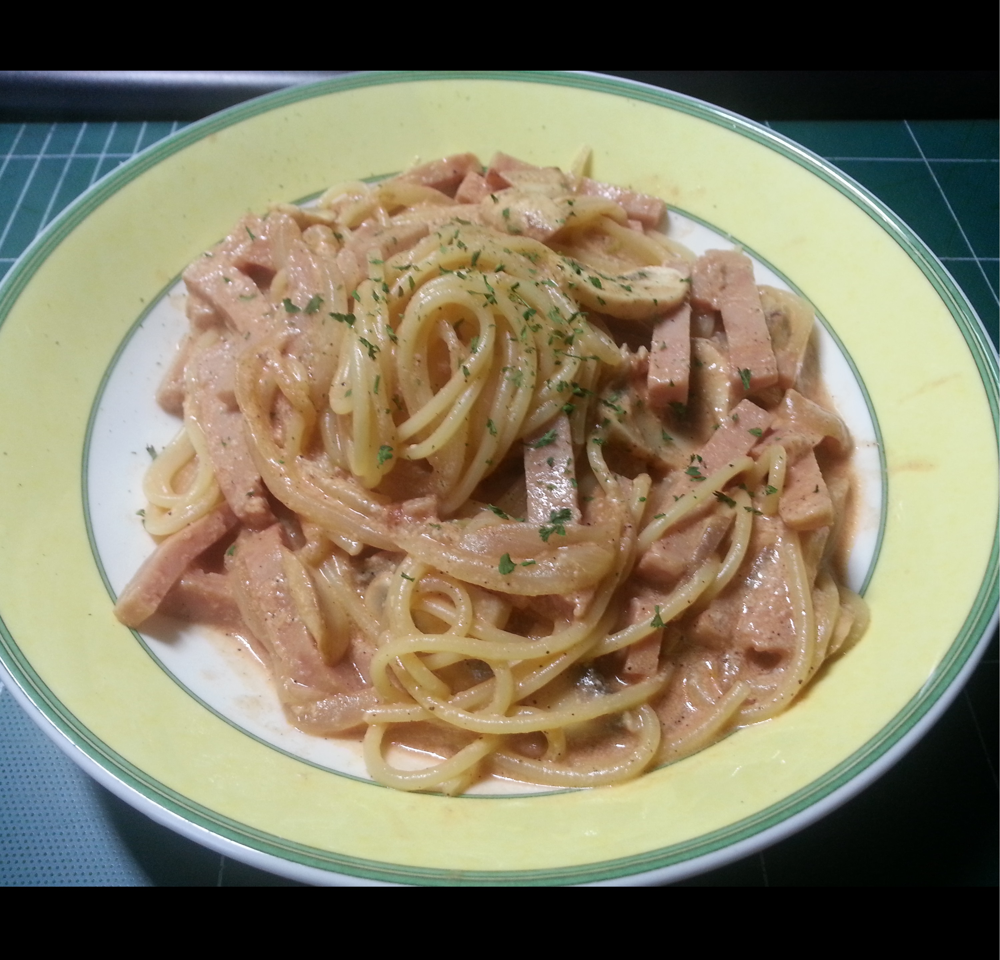
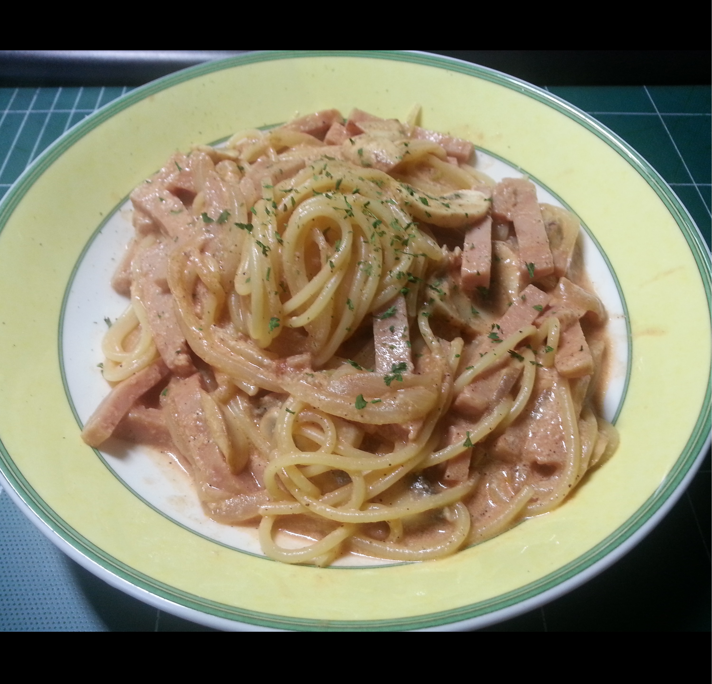

[파스타] 토마토 로제 파스타 | Cook
또 다시 출출한데 맛있는걸 먹고 싶습니다.
그나마 만만한 요리 스파게티를 해먹어 볼까요?ㅋㅋㅋ 밀가루 중독이야..
거두절미하고, 바로 들어갑니다!

준비물 : 파스타 면, 토마토파스타소스, 우유, 햄
양파, 치즈(기호에 따라), 파슬리 가루(장식용)

이번에는 냉장고에 토마토 소스가 있길래, 그걸 써서 해봤어요.
역시 사먹는건 진짜 맛있더라구요 흠..
사실 치즈같은건 전혀 안들어가도 되는데 그냥.. 제가 치즈를 좋아해서요..
그냥 저것만 날로도 먹어요..ㅎㅎ
전에 보아 왔던 마찬가지 과정이에요.
물 - 면 - 양파 - 햄 - 소스..
그쵸 그쵸? 절대로 안어려워 보이죠?? 정말 쉽다니까요~~


양파양파 그리고 햄햄햄햄~~
볶다가, 토마토 소스를 부어주세요!
사실은 로제소스로 만들려고 계획했었는데, 엄마가 보시더니
그냥 먹자~! 이것도 맛있겠는걸~?
그러셔서 도중에 그냥 토마토 스파게티쪽으로 돌리게 되었습니다..!! ㅋㅋ
그래서 나중에 며칠 뒤, 다시 한 번 만들어 먹게 되었습니당.
로제 소스란, 크림소스와 토마토소스를 잘 조합하여 섞어 만든 소스로
색깔이 장미, Rose와 비슷하다고 하여 로제 소스 라고 불리는 소스입니다!
뭐? 크림소스랑 토마토소스?
알게 뭐야~ 야매요리 발동!!
토마토 소스 잔뜩 넣고, 농도를 조절해가면서 우유를 넣어 갔습니다.ㅋㅋㅋ
뭐 솔직히 내가 먹는건데 나만 맛있으면 됐잖아요.
그리고 진짜루 꽤 맛있다구요 뭘~~
 

rose tomato pasta 완성!!
물론, 사진이 네개인데 앞에 두개가 그냥 토마토로 갈아탄 거구
뒤에 두 사진이 나중에 다시 만들어먹은 로제 토마토 파스타 사진!